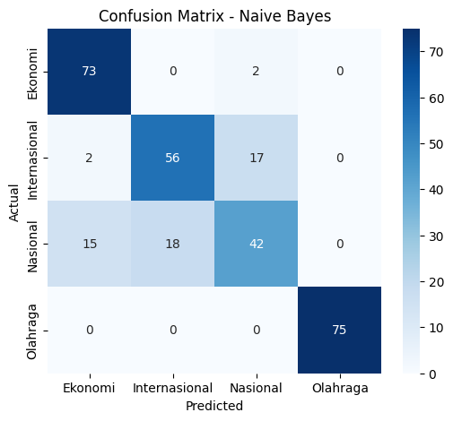

UTS#
SOAl NOMOR 1#
Lakukan analisa klasifikasikan berita dengan extraksi fitur model topik modelling dengan classifier naïve bayes dan SVM
Dataset#
import pandas as pd
# Ganti path sesuai lokasi file kamu
df = pd.read_csv("Beritauts.csv")
# Melihat struktur data
print("Jumlah baris dan kolom:", df.shape)
print("\nNama kolom:", df.columns.tolist())
# Lihat 5 data pertama
df.head()
---------------------------------------------------------------------------
FileNotFoundError Traceback (most recent call last)
Cell In[1], line 4
1 import pandas as pd
3 # Ganti path sesuai lokasi file kamu
----> 4 df = pd.read_csv("Beritauts.csv")
6 # Melihat struktur data
7 print("Jumlah baris dan kolom:", df.shape)
File ~/.local/lib/python3.12/site-packages/pandas/io/parsers/readers.py:1026, in read_csv(filepath_or_buffer, sep, delimiter, header, names, index_col, usecols, dtype, engine, converters, true_values, false_values, skipinitialspace, skiprows, skipfooter, nrows, na_values, keep_default_na, na_filter, verbose, skip_blank_lines, parse_dates, infer_datetime_format, keep_date_col, date_parser, date_format, dayfirst, cache_dates, iterator, chunksize, compression, thousands, decimal, lineterminator, quotechar, quoting, doublequote, escapechar, comment, encoding, encoding_errors, dialect, on_bad_lines, delim_whitespace, low_memory, memory_map, float_precision, storage_options, dtype_backend)
1013 kwds_defaults = _refine_defaults_read(
1014 dialect,
1015 delimiter,
(...) 1022 dtype_backend=dtype_backend,
1023 )
1024 kwds.update(kwds_defaults)
-> 1026 return _read(filepath_or_buffer, kwds)
File ~/.local/lib/python3.12/site-packages/pandas/io/parsers/readers.py:620, in _read(filepath_or_buffer, kwds)
617 _validate_names(kwds.get("names", None))
619 # Create the parser.
--> 620 parser = TextFileReader(filepath_or_buffer, **kwds)
622 if chunksize or iterator:
623 return parser
File ~/.local/lib/python3.12/site-packages/pandas/io/parsers/readers.py:1620, in TextFileReader.__init__(self, f, engine, **kwds)
1617 self.options["has_index_names"] = kwds["has_index_names"]
1619 self.handles: IOHandles | None = None
-> 1620 self._engine = self._make_engine(f, self.engine)
File ~/.local/lib/python3.12/site-packages/pandas/io/parsers/readers.py:1880, in TextFileReader._make_engine(self, f, engine)
1878 if "b" not in mode:
1879 mode += "b"
-> 1880 self.handles = get_handle(
1881 f,
1882 mode,
1883 encoding=self.options.get("encoding", None),
1884 compression=self.options.get("compression", None),
1885 memory_map=self.options.get("memory_map", False),
1886 is_text=is_text,
1887 errors=self.options.get("encoding_errors", "strict"),
1888 storage_options=self.options.get("storage_options", None),
1889 )
1890 assert self.handles is not None
1891 f = self.handles.handle
File ~/.local/lib/python3.12/site-packages/pandas/io/common.py:873, in get_handle(path_or_buf, mode, encoding, compression, memory_map, is_text, errors, storage_options)
868 elif isinstance(handle, str):
869 # Check whether the filename is to be opened in binary mode.
870 # Binary mode does not support 'encoding' and 'newline'.
871 if ioargs.encoding and "b" not in ioargs.mode:
872 # Encoding
--> 873 handle = open(
874 handle,
875 ioargs.mode,
876 encoding=ioargs.encoding,
877 errors=errors,
878 newline="",
879 )
880 else:
881 # Binary mode
882 handle = open(handle, ioargs.mode)
FileNotFoundError: [Errno 2] No such file or directory: 'Beritauts.csv'
Preprocessing#
!pip install Sastrawi nltk
Requirement already satisfied: Sastrawi in /usr/local/lib/python3.12/dist-packages (1.0.1)
Requirement already satisfied: nltk in /usr/local/lib/python3.12/dist-packages (3.9.1)
Requirement already satisfied: click in /usr/local/lib/python3.12/dist-packages (from nltk) (8.3.0)
Requirement already satisfied: joblib in /usr/local/lib/python3.12/dist-packages (from nltk) (1.5.2)
Requirement already satisfied: regex>=2021.8.3 in /usr/local/lib/python3.12/dist-packages (from nltk) (2024.11.6)
Requirement already satisfied: tqdm in /usr/local/lib/python3.12/dist-packages (from nltk) (4.67.1)
import re
from Sastrawi.StopWordRemover.StopWordRemoverFactory import StopWordRemoverFactory
import nltk
nltk.download('stopwords')
from nltk.corpus import stopwords
# Ambil stopword otomatis
stop_factory = StopWordRemoverFactory()
stop_id = set(stop_factory.get_stop_words())
stop_en = set(stopwords.words('english'))
stops = stop_id.union(stop_en)
def clean_text(text):
text = str(text).lower()
text = re.sub(r"http\S+", " ", text) # hapus URL
text = re.sub(r"[^a-z\s]", " ", text) # hapus simbol
text = re.sub(r"\s+", " ", text).strip() # hapus spasi berlebih
tokens = [t for t in text.split() if t not in stops and len(t) > 2]
return " ".join(tokens)
# Kolom teks dan label
text_col = "berita"
label_col = "kategori"
df["cleaned_text"] = df[text_col].apply(clean_text)
df[[text_col, "cleaned_text", label_col]].head(10)
[nltk_data] Downloading package stopwords to /root/nltk_data...
[nltk_data] Package stopwords is already up-to-date!
| berita | cleaned_text | kategori | |
|---|---|---|---|
| 0 | Menteri Koordinator (Menko) Bidang Perekonomia... | menteri koordinator menko bidang perekonomian ... | Ekonomi |
| 1 | Dalam rangka memeriahkan hari jadi ke-50, PT S... | rangka memeriahkan hari jadi surabaya industri... | Ekonomi |
| 2 | Wacana Presiden Prabowo Subianto akan membentu... | wacana presiden prabowo subianto membentuk mem... | Ekonomi |
| 3 | BPJS Ketenagakerjaan dan Kementerian Agama (Ke... | bpjs ketenagakerjaan kementerian agama kemenag... | Ekonomi |
| 4 | Pemerintah akan segera membentuk Satuan Tugas ... | pemerintah segera membentuk satuan tugas pemut... | Ekonomi |
| 5 | Menko Bidang Infrastruktur dan Pembangunan Kew... | menko bidang infrastruktur pembangunan kewilay... | Ekonomi |
| 6 | Kepala Badan Gizi Nasional Dadan Hindayana men... | kepala badan gizi nasional dadan hindayana men... | Ekonomi |
| 7 | Menteri Koordinator Bidang Pangan Zulkifli Has... | menteri koordinator bidang pangan zulkifli has... | Ekonomi |
| 8 | Uji coba alias commissioning pembangkit listri... | uji coba alias commissioning pembangkit listri... | Ekonomi |
| 9 | Anak crazy rich pengusaha sawit Kalimantan Sam... | anak crazy rich pengusaha sawit kalimantan sam... | Ekonomi |
Error: Runtime no longer has a reference to this dataframe, please re-run this cell and try again.
No charts were generated by quickchart
Topik Modelling LDA#
from sklearn.feature_extraction.text import CountVectorizer
from sklearn.decomposition import LatentDirichletAllocation
count_vec = CountVectorizer(max_df=0.95, min_df=5)
dtm = count_vec.fit_transform(df["cleaned_text"])
lda = LatentDirichletAllocation(n_components=5, random_state=42)
doc_topic = lda.fit_transform(dtm)
# tampilkan topik
feature_names = count_vec.get_feature_names_out()
n_top_words = 5
for idx, topic in enumerate(lda.components_):
top_words = [feature_names[i] for i in topic.argsort()[:-n_top_words - 1:-1]]
print(f"Topik {idx+1}: {', '.join(top_words)}")
Topik 1: laut, pagar, tersebut, jakarta, tangerang
Topik 2: indonesia, timnas, pemain, piala, gol
Topik 3: indonesia, persen, program, negara, tahun
Topik 4: tersebut, kasus, presiden, kpk, kata
Topik 5: israel, gaza, senjata, gencatan, orang
Membagi Data & Encodel Label#
import numpy as np
import pandas as pd
# Menentukan topik paling dominan di setiap dokumen
dominant_topic = np.argmax(doc_topic, axis=1)
# Tambahkan kolom topik dominan ke dataframe asli
df["topik_dominan"] = dominant_topic + 1 # +1 biar topiknya mulai dari 1 bukan 0
# Tampilkan 5 berita pertama beserta topik dominannya
df[["cleaned_text", "topik_dominan"]].head(5)
| cleaned_text | topik_dominan | |
|---|---|---|
| 0 | menteri koordinator menko bidang perekonomian ... | 3 |
| 1 | rangka memeriahkan hari jadi surabaya industri... | 3 |
| 2 | wacana presiden prabowo subianto membentuk mem... | 3 |
| 3 | bpjs ketenagakerjaan kementerian agama kemenag... | 3 |
| 4 | pemerintah segera membentuk satuan tugas pemut... | 1 |
from sklearn.preprocessing import LabelEncoder
from sklearn.model_selection import train_test_split
import numpy as np
# --- 1. Jika dataset kamu sudah ada kolom kategori ---
# (misalnya kolom bernama 'kategori' berisi: politik, ekonomi, olahraga, dll)
# Maka encode labelnya begini:
le = LabelEncoder()
df["label_encoded"] = le.fit_transform(df["kategori"])
# --- 2. Jika TIDAK ADA kolom kategori ---
# dan kamu mau pakai topik_dominan dari LDA sebagai label sementara:
# df["label_encoded"] = df["topik_dominan"]
# --- 3. Siapkan fitur dan label ---
X = doc_topic # fitur dari hasil topic modeling (LDA)
y = df["label_encoded"] # label hasil encoding
# --- 4. Bagi data menjadi training dan testing ---
X_train, X_test, y_train, y_test = train_test_split(
X, y,
test_size=0.2, # 20% data untuk pengujian, 80% untuk pelatihan
random_state=42, # biar hasil konsisten setiap dijalankan
stratify=y # biar proporsi label tetap seimbang di train dan test
)
# --- 5. Cek hasil pembagian ---
print("Jumlah total data:", len(y))
print("Jumlah data training:", len(y_train))
print("Jumlah data testing:", len(y_test))
print("\nPersentase data training: {:.2f}%".format(len(y_train)/len(y)*100))
print("Persentase data testing: {:.2f}%".format(len(y_test)/len(y)*100))
# --- 6. (Opsional) Lihat contoh hasil encoding ---
print("\nKategori unik:", le.classes_ if 'le' in locals() else "topik_dominan")
df[["cleaned_text", "label_encoded"]].head()
Jumlah total data: 1500
Jumlah data training: 1200
Jumlah data testing: 300
Persentase data training: 80.00%
Persentase data testing: 20.00%
Kategori unik: ['Ekonomi' 'Internasional' 'Nasional' 'Olahraga']
| cleaned_text | label_encoded | |
|---|---|---|
| 0 | menteri koordinator menko bidang perekonomian ... | 0 |
| 1 | rangka memeriahkan hari jadi surabaya industri... | 0 |
| 2 | wacana presiden prabowo subianto membentuk mem... | 0 |
| 3 | bpjs ketenagakerjaan kementerian agama kemenag... | 0 |
| 4 | pemerintah segera membentuk satuan tugas pemut... | 0 |
Klasifikasi#
from sklearn.naive_bayes import MultinomialNB
from sklearn.svm import LinearSVC
from sklearn.metrics import accuracy_score, classification_report
# Naive Bayes
nb = MultinomialNB()
nb.fit(X_train, y_train)
nb_pred = nb.predict(X_test)
# SVM
svm = LinearSVC(random_state=42, max_iter=10000)
svm.fit(X_train, y_train)
svm_pred = svm.predict(X_test)
# Evaluasi
print("=== Multinomial Naïve Bayes ===")
print("Accuracy:", accuracy_score(y_test, nb_pred))
print(classification_report(y_test, nb_pred, target_names=le.classes_))
print("=== Linear SVM ===")
print("Accuracy:", accuracy_score(y_test, svm_pred))
print(classification_report(y_test, svm_pred, target_names=le.classes_))
=== Multinomial Naïve Bayes ===
Accuracy: 0.82
precision recall f1-score support
Ekonomi 0.81 0.97 0.88 75
Internasional 0.76 0.75 0.75 75
Nasional 0.69 0.56 0.62 75
Olahraga 1.00 1.00 1.00 75
accuracy 0.82 300
macro avg 0.81 0.82 0.81 300
weighted avg 0.81 0.82 0.81 300
=== Linear SVM ===
Accuracy: 0.8266666666666667
precision recall f1-score support
Ekonomi 0.79 0.99 0.88 75
Internasional 0.79 0.75 0.77 75
Nasional 0.72 0.57 0.64 75
Olahraga 1.00 1.00 1.00 75
accuracy 0.83 300
macro avg 0.82 0.83 0.82 300
weighted avg 0.82 0.83 0.82 300
Confusion Matriks#
import matplotlib.pyplot as plt
import seaborn as sns
from sklearn.metrics import confusion_matrix
# Naive Bayes
plt.figure(figsize=(6,5))
sns.heatmap(confusion_matrix(y_test, nb_pred), annot=True, fmt='d', cmap='Blues',
xticklabels=le.classes_, yticklabels=le.classes_)
plt.title("Confusion Matrix - Naive Bayes")
plt.xlabel("Predicted")
plt.ylabel("Actual")
plt.show()
# SVM
plt.figure(figsize=(6,5))
sns.heatmap(confusion_matrix(y_test, svm_pred), annot=True, fmt='d', cmap='Greens',
xticklabels=le.classes_, yticklabels=le.classes_)
plt.title("Confusion Matrix - SVM")
plt.xlabel("Predicted")
plt.ylabel("Actual")
plt.show()

SOAL NOMOR 2#
Lakukan analisa clutering dokumen pada data email berikut
import pandas as pd
# Coba beberapa encoding umum untuk menghindari error UnicodeDecodeError
try:
df = pd.read_csv("spamuts.csv", encoding="utf-8")
except UnicodeDecodeError:
try:
df = pd.read_csv("spamuts.csv", encoding="latin-1")
except UnicodeDecodeError:
df = pd.read_csv("spamuts.csv", encoding="windows-1252")
# Tampilkan beberapa baris pertama
print("=== 5 Baris Pertama Dataset ===")
print(df.head())
# Tampilkan struktur dataset
print("\n=== Informasi Dataset ===")
print(df.info())
=== 5 Baris Pertama Dataset ===
id Text Unnamed: 2 \
0 1 Go until jurong point, crazy.. Available only ... NaN
1 2 Ok lar... Joking wif u oni... NaN
2 3 Free entry in 2 a wkly comp to win FA Cup fina... NaN
3 4 U dun say so early hor... U c already then say... NaN
4 5 Nah I don't think he goes to usf, he lives aro... NaN
Unnamed: 3 Unnamed: 4
0 NaN NaN
1 NaN NaN
2 NaN NaN
3 NaN NaN
4 NaN NaN
=== Informasi Dataset ===
<class 'pandas.core.frame.DataFrame'>
RangeIndex: 5572 entries, 0 to 5571
Data columns (total 5 columns):
# Column Non-Null Count Dtype
--- ------ -------------- -----
0 id 5572 non-null int64
1 Text 5572 non-null object
2 Unnamed: 2 50 non-null object
3 Unnamed: 3 12 non-null object
4 Unnamed: 4 6 non-null object
dtypes: int64(1), object(4)
memory usage: 217.8+ KB
None